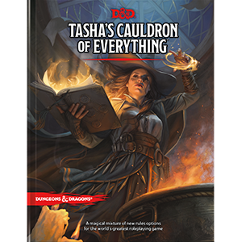
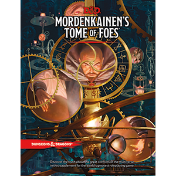
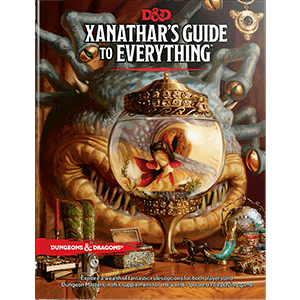
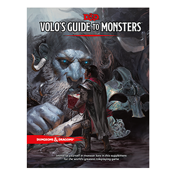

Latest D&D News

Tasha's Cauldron of Everything
A magical mixture of rules options for the world's greatest roleplaying game.
The wizard Tasha, whose great works include the spell Tasha’s hideous laughter,
has gathered bits and bobs of precious lore during her illustrious career as an adventurer.
Her enemies wouldn’t want these treasured secrets scattered across the multiverse, so in defiance,
she has collected and codified these tidbits for the enrichment of all.
Full of expanded content for players and Dungeon Masters alike,
this book is a great addition to the Player's Handbook and the Dungeon Master’s Guide.
Baked in you'll find more rule options for all the character classes in the Player's Handbook,
including more subclass options. Thrown in for good measure is the artificer class, a master of magical invention.
And this witch's brew wouldn't be complete without a dash of added artifacts, spellbook options,
spells for both player characters and monsters, magical tattoos, group patrons, and other tasty goodies.
Source: Tasha's Cauldron of Everything

Mordenkainen's Tome Foes
Discover the truth about the great conflicts of the D&D multiverse in this supplement for the world's greatest roleplaying game.
This tome is built on the writings of the renowned wizard from the world of Greyhawk,
gathered over a lifetime of research and scholarship. In his travels to other realms and other planes of existence,
he has made many friends, and has risked his life an equal number of times, to amass the knowledge contained herein.
In addition to Mordenkainen’s musings on the endless wars of the multiverse, the book contains game statistics for dozens of monsters:
new demons and devils, several varieties of elves and duergar, and a vast array of other creatures from throughout the planes of existence.
Source: Mordenkainen's Tome Foes

Xanthar's Guide To Everything
Explore a wealth of new rules options for both players and Dungeon Masters in this supplement for the world’s greatest roleplaying game.
he beholder Xanathar—Waterdeep’s most infamous crime lord—is known to hoard information on friend and foe alike.
The beholder catalogs lore about adventurers and ponders methods to thwart them. Its twisted mind imagines that
it can eventually record everything!
Source: Xanthar's Guide To Everything

Volo's Guide To Monsters
Immerse yourself in monster lore in this supplement for the world’s greatest roleplaying game.
The esteemed loremaster Volothamp Geddarm is back and he’s written a fantastical dissertation,
covering some of the most iconic monsters in the Forgotten Realms. Unfortunately,
the Sage of Shadowdale himself, Elminster, doesn’t believe Volo gets some of the important details quite right.
Don’t miss out as Volo and Elminster square off (academically speaking of course) to illuminate the uninitiated
on creatures both common and obscure. Uncover the machinations of the mysterious Kraken Society,
what is the origin of the bizarre froghemoth, or how to avoid participating in the ghastly reproductive cycle of the grotesque vargouille.
Source: Volo's Guide To Monsters